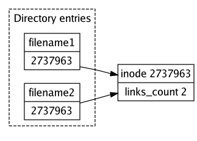
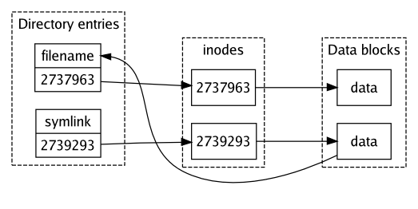

8.1. Немного теории
Прежде чем мы перейдём к рассмотрению конкретных операций на файловых системах, мы совершим более теоретический обзор принципов работы ФС в UNIX-подобных системах. Slackware Linux поддерживает множество различных файловых систем, но виртуально все эти ФС используют схожую семантику. Эта семантика обеспечивается слоем VFS (Virtual File System, Виртуальная файловая система), базовым уровнем для работы дисковых устройств и сетевых файловых систем.
8.1.1. Индексные дескрипторы, директории и данные
Файловые системы состоят из элементов двух типов: данных и метаданных. Метаданные описывают актуальные блоки данных, находящихся на диске. Большинство файловых систем использует информационные (индексные) дескрипторы (inode) для сохранения метаданных. Общие дескрипторы таковы:
Таблица 8.1. Общие поля inode
| Поле | Описание |
|---|---|
| mode | права доступа. |
| uid | идентификатор пользователя-владельца файла. |
| gid | идентификатор группы-владельца файла. |
| size | размер файла в байтах. |
| ctime | время создания файла. |
| mtime | время последней модификации файла. |
| links_count | количество ссылок, указывающих на этот файл. |
| i_block | указатели на блок данных. |
Если вы с UNIX или Linux не на «ты», то эти имена могут показаться нелепыми, но мы разъясним каждое из них в соответствующих параграфах. В любом случае, в этой таблице вы можете увидеть связь между индексными дескрипторами и данными, особенно это касается поля i_block: каждый inode содержит указатели на представляемые ими блоки данных. Дескрипторы и блоки данных и представляют собой файлы в действительности.
Вы можете поинтересоваться тем, где содержатся имена файлов (и директорий), ведь в списке индексных дескрипторов нет такого поля. На самом деле, имена файлов разделены между дескрипторами и блоками данных, что позволяет вам делать примечательные вещи, такие как назначить единственному файлу несколько имён. Названия файлов хранятся в так называемых записях директорий. Эти записи определяют имена файлов и соответствующие им индексные дескрипторы. Так как директории тоже представлены с помощью inode, структура директорий создаётся по такому же принципу.
Мы можем привести простой пример, как это всё работает, продемонстрировав, какие действия совершает ядро при выполнении команды cat /home/daniel/note.txt.
Система прочитывает дескриптор корневой директории /,
проверяет, доступен ли он на чтение данному пользователю, и читает блоки
данных, чтобы найти номер inode домашней директории.
Система прочитывает дескриптор домашней директории /home/,
проверяет, доступен ли он на чтение данному пользователю, и читает блоки
данных, чтобы найти номер inode домашней директории.
Система прочитывает дескриптор директории /home/daniel/,
проверяет, доступен ли он на чтение данному пользователю, и читает блоки
данных, чтобы найти номер inode файла note.txt.
Система прочитывает дескриптор файла /home/daniel/note.txt,
проверяет, доступен ли он на чтение данному пользователю, и возвращает блоки
данных программе cat при помощи системного вызова
read().
8.1.2. Права на файлы
Ранее мы говорили, что Linux является многопользовательской системой. Это означает, что каждый пользователь имеет собственные файлы (которые обычно располагаются в домашней директории). Вместе с тем пользователи могут быть членами групп, которые добавляют дополнительные привилегии.
Как вы видели выше в таблице индексных дескрипторов, каждый файл имеет владельца и соотнесён с группой. Традиционная система контроля доступа UNIX различает права на чтение, запись или выполнение файла. Эти права хранятся в поле индексного дескриптора mode. Это поле представляет права в форме четырёх восьмеричных чисел. Первое число означает специальные опции, второе хранит права владельца, третье – группы, а четвёртое – права остальных пользователей. Права назначаются добавлением или удалением одного из следующих чисел:
Таблица 8.2. Значение чисел октета
| Число | Значение |
|---|---|
| 1 | Выполнение (x, eXecute) |
| 2 | Запись (w, Write) |
| 4 | Чтение (r, Read) |
Так, допустим, что файлу назначены права 0644. Это означает, что файл доступен на чтение и запись владельцу (6), а группе и остальным пользователям на чтение (4).
Большинство пользователей не желают иметь дела с восьмеричными числами, поэтому существует множество утилит, которые работают в том числе и с алфавитным представлением прав доступа. В этой нотации используются символы, перечисленые в Таблице 8.2. «Значение чисел октета», указанные в скобках. В следующем примере приведена информация о файле в режиме 0644. Номера заменены тремя rwx-триплетами (первый символ указывает на наличие специальных опций).
- $ ls -l note.txt
- -rw-r--r-- 1 daniel daniel 5 Aug 28 19:39 note.txt
Спустя годы традиционной для UNIX системы разграничения прав в некоторых случаях стало недостаточно. Спецификация POSIX 1003.1e призвана расширить модель управления доступом при помощи ACL (Access Control Lists, список контроля доступа). К сожалению, эта попытка не доведена до конца, хотя некоторые системы (например, GNU/Linux) реализовали ACL. Список контроля доступа следует той же семантике, как и обычные файловые права, но но предоставляет возможность указать rwx-значения для дополнительных пользователей и групп.
Следующий пример содержит список контроля доступа для файла. Как вы можете видеть, права выглядят обычно для UNIX (присутствуют режим доступа пользователя, группы и всех остальных), но здесь имеется дополнительная запись для пользователя joe.
user::rwx user:joe:r-- group::--- mask::r-- other::---
Для более комплексного (и совершенного) решения некоторые системы GNU/Linux добавляют более мелкоструктурный контроль доступа при помощи MAC (Mandatory Access Control, мандатное управление доступом), например, SELinux и AppArmor. Но эти системы находятся за пределами данной книги.
8.1.3. Ссылки
Указатель, ссылающийся на inode, называется жёсткой ссылкой (hard link). Большая часть файлов прилинкованы только единожды, но ничто не препятствует созданию дополнительнных ссылок. Это действие увеличит значение поля links_count в индексном дескрипторе. Это позволяет системе определить незанятые файлами дескрипторы и блоки данных. Если значение links_count равно нулю, то данный дескриптор ни на что не ссылается, и может быть переопределён.
Изображение 8.1. Структура жёсткой ссылки

У жёстких ссылок есть два ограничения. Прежде всего, жёсткая ссылка не может быть установлена между разными файловыми системами, т.к. она связывает индексные дескрипторы. Это связано с тем, каждая файловая система имеет собственные дескрипторы и, следовательно, их номера. Также большая часть ФС не позволяет создавать жёсткие ссылки на директории, так как это может вызвать зацикливание иерархии директорий, что может привести к различного рода блокировкам и нарушает целостность файловой системы. В добавлении к этому, большинство реализаций команд rm и rmdir не умеют работать с жёсткими ссылками.
Этих ограничений нет у символических ссылок, потому что они указывают не на inode, а на имена файлов. Когда операционная система сталкивается с символической ссылкой, она следует по представляемому ею пути. Символическая ссылка также может ссылаться на несуществующий файл, т.к. она лишь содержит имя. Такие ссылки называются висящими.
Изображение 8.2. Структура символической ссылки

Примечание
Если вы причастны к системному администрированию, будет хорошо знать о
безопасности жёстких ссылок. Если директория /home расположена
в файловой системе, содержащей каки-либо системные программы, тогда
пользователь будет способен создать жёсткие ссылки, ссылающиеся на них.
Даже если уязвимая программа будет обновлена, ссылка в домашней директории
пользователя всё равно будет указывать на старый исполнимый файл, позволяя
пользователю выполнять уязвимую программу.
В такой ситуации хорошей идеей будет помещать директории, доступные для записи
пользователям на отдельных файловых системах. На практике это означает, что
нужно отделить как минимум директории /home и
/tmp.
8.3. Работа с директориями
Мы кратко рассмотрели вопрос функционирования системы директорий в секции 8.1.1, сейчас же мы обратимся к некоторым командам для манипуляции с директориями.
8.3.1. Просмотр директорий
Команда ls, с которой мы уже знакомы по разделу 8.2.1, так же может быть использована для просмотра директорий. Как мы знаем, по умолчанию ls выводит файлы и директории, которые можно идетифицировать в расширенном ("long") режиме вывода ls:
- $ ls -l
- total 36
- -rw-rw-r-- 1 daniel daniel 12235 Sep 4 15:56 dns.txt
- -rw-rw-r-- 1 daniel daniel 7295 Sep 4 15:56 network-hosts.txt
- drwxrwxr-x 2 daniel daniel 4096 Sep 4 15:55 papers
Если указано имя директории или же шаблон подстановки, ls выведет содержимое этой директории или всех директорий, имена которых совпадают с шаблоном. Например, если существует директория papers, команда ls paper* выведет содержимое этой директории. Это может обескуражить, если вам требуется всего лишь вывести список директорий, а не их содержимое. Флаг -d позволит вам это сделать:
- $ ls -ld paper*
- drwxrwxr-x 2 daniel daniel 4096 Sep 4 15:55 papers
Вы так же можете вывести содержимое всех директорий и поддиректорий рекурсивно, указав параметр -R:
- $ ls -R
- .:
- dns.txt network-hosts.txt papers
- ./papers:
- cs phil
- ./papers/cs:
- entr.pdf
- ./papers/phil:
- logics.pdf
8.3.2. Создание и удаление директорий
В UNIX есть команда mkdir, используемая для создания директорий. Если указан относительный путь, то директория будет создана в текущей директории. Базовый синтаксис команды очень прост: mkdir <name>. Например:
- $ mkdir mydir
По умолчанию, mkdir создаёт одну директорию. Так, если вы
решите создать директории mydir/mysubdir, mkdir
выдаст ошибку, если директория mydir ещё не существует. Но если вы
всё же хотите создать обе директории одной командой, то вам нужно указать
параметр -p:
- $ mkdir -p mydir/mysubdir
Команда rmdir удаляет директории. Её поведение сходно с
поведением команды mkdir. Команда rmdir
mydir/mysubdir удалит только директорию mysubdir, тогда
как команда rmdir -p mydir/mysubdir удалит сначала
mydir/mysubdir, а затем и mydir.
Если в директории, которую вы удаляете, есть записи, то выполнение rmdir остановится. В случае, если вам нужно удалить директорию со всем содержимым, то используйте команду rm.
8.4. Управление файлами и директориями
8.4.1. Копирование
Файлы и директории могут быть скопированы командой cp. В самом
простом случае команде нужно передать имена файла-источника и результирующего
файла. Следующий пример сделает копию файла file1 с именем
file2:
- $ cp file1 file2
Не будет сюрпризом, что относительные и абсолютные пути так же работают:
- $ cp file1 somedir/file2
- $ cp file1 /home/joe/design_documents/file2
Вторым параметром вы также можете указать директорию. В таком случае,
cp скопирует файлы в указанную директорию, сохранив оригинальные
имена. Если указано более двух параметров, то последний параметр будет
использован в качестве имени директории. Например:
- $ cp file1 file2 somedir
Эта команда скопирует оба файла file1 и file2 в
директорию somedir/. Вы не сможете скопировать несколько файлов в
один. Если вам действительно нужно сделать это, то следует воспользоваться
командой cat:
- $ cat file1 file2 > combined_file
Вы можете использовать cp и для копирования директорий, указав параметр -R. При этом рекурсивно скопируются все директории и поддиректории. Если принимающая директория существует, то директория-источник будет помещена в неё. Если её не существует, то она будет создана в случае, если осуществляется копирование только одной директории.
- $ cp -r mytree tree_copy
- $ mkdir trees
- $ cp -r mytree trees
По выполнению этих команд появятся две копии директории mytree:
tree_copy и trees/mytree. Попытка скопировать две
директории в несуществующую директорию обернётся неудачей:
- $ cp -R mytree mytree2 newdir
- usage:
- cp [-R [-H | -L | -P]] [-f | -i] [-pv] src target
- cp [-R [-H | -L | -P]] [-f | -i] [-pv] src1 ... srcN directory
Примечание
Традиционно, на многих UNIX-системах рекурсивное копирование осуществлялось при помощи параметра -r. Однако поведение этого параметра может зависеть от конкретной реализации, и спецификация UNIX версии 3 постановила, что этот параметр может быть удалён в следующих версиях стандарта.
Когда вы копируете файлы рекурсивно, хорошей идеей будет заранее определить поведение cp по отношению к символическим ссылкам. Спецификация UNIX 3 версии не определяет поведение по умолчанию в данной ситуации. Если используется параметр -P, cp не будет следовать по символическим ссылкам, а только скопирует сами ссылки. Если же используется параметр -H, то cp будет следовать по ссылкам в зависимости от типа и содержимого файлов. Если используется параметр -L, то cp будет следовать по ссылкам в зависимости от содержимого файлов.
Если вы хотите сохранить информацию о владельцах файлов, биты SGID/SUID и время доступа/модификации, вы можете использовать флаг -p. Тогда будет предпринята попытка сохранить данные значения при копировании. Хорошая реализация cp предоставляет некоторые дополнительные проверки, например, защиту от перезаписи файлов со схожими метаданными.
8.4.2. Перемещение файлов и директорий
Команда UNIX для перемещения файлов, mv, может перемещать или переименовывать файлы или директории. Что именно произойдёт, зависит от их расположения. Если источник и приёмник находятся на одной файловой системе, mv обычно просто создаёт новую жёсткую ссылку, тем самым переименовывая файлы или директории. Если же оба из них находятся на разных файловых системах, файлы действительно копируются, после чего источники удаляются.
Синтаксис mv сравним с синтаксисом cp.
Наиболее общая команда, переименовывающая файл file1 в
file2 выглядит так:
- $ mv file1 file2
Точно такой же синтаксис используется для изменения имени директории.
Когда последним параметром является существующая директория, файл или директория, указанные первым параметром, будет перемещён в эту директорию. Также можно указать несколько файлов для перемещения. Например:
- $ mkdir targetdir
- $ mv file1 directory1 targetdir
Это создаст директорию targetdir и переместит файл
file1 и директорию directory1 в эту директорию.
8.4.3. Удаление файлов и директорий
Удалить файлы и директории можно при помощи команды rm (1).
Данная команда удаляет ссылку на файл или директорию. Если не существует прочих
ссылок на этот файл, занятые им inode и блоки жёсткого диска будут доступны
новым файлам. При запуске rm следует передать ей имя файла в
качестве параметра. Например, для удаления файлов file1 и
file2 вы можете выполнить:
- $ rm file1 file2
Если вам нужно удалить большое количество файлов, которые запрашивают подтверждение удаления, или вы хотите использовать rm в сценарии командной оболочки, добавьте параметр -f, чтобы отключить все уведомления. Файлы, которые не доступны для записи, с использованием флага -f также будут удалены, если позволят права доступа. Этот параметр также подавляет печать ошибок в стандартный поток вывода, если файл, который должен быть удален, не был найден.
Для рекурсивного удаления директорий используется параметр -r.
rm (1) пройдёт по структуре каталогов и удалит каждый
встреченный файл. При указании параметра -f используется такая же
стратегия. В качестве краткого примера дадим команду, которая удалит все
вложенные файлы и директории в директории notes:
- $ rm -r notes
Так как команда rm (1) использует функцию unlink (2), блоки данных не перезаписываются. Информация, содержащаяся в блоках данных перезаписывается только тогда, когда освободившееся пространство будет использовано. Чтобы надёжно удалить файлы, включая всю информацию, можно использовать команду shred (1), предоставляемую некоторыми системами. Эта команда перезаписывает блоки данных случайной информацией. Правда, на многих современных (журналируемых) файловых системах это не эффективно, так как они не сразу записывают данные на жёсткий диск.
Команда unlink (1) является реализацией функции unlink (2). От неё относительно мало пользы, так как она не может удалять директории.
8.7. Архивы
8.7.1. Введение
Рано или поздно пользователь GNU/Linux столкнётся с архивами tar – стандартным форматом архивирования файлов в этих системах. Tar обычно используется вместе с gzip или bzip2. Обе команды могут сжимать файлы и архивы. В следующей таблице перечислены самые распространённые расширения архивов и их значения.
Таблица 8.6 Расширения архивов
| Расширение | Значение |
|---|---|
| .tar | Несжатый архив tar |
| .tar.gz | Tar-архив, сжатый при помощи gzip |
| .tgz | Tar-архив, сжатый при помощи gzip |
| .tar.bz2 | Tar-архив, сжатый при помощи bzip2 |
| .tbz | Tar-архив, сжатый при помощи bzip2 |
Разница между bzip2 и gzip в том, что bzip2 обнаруживает повторение данных в больших блоках, что даёт лучшее сжатие. Но в связи с этим bzip2 работает медленнее, чем gzip.
8.7.2. Распаковка архивов
Так как в системах GNU/Linux данные и программы часто упакованы в архивы с помощью tar, важно уметь распаковывать такие файлы. Первое, что вы обычно захотите выполнить, получив tar-архив, – это посмотреть его содержимое. Это можно сделать с помощью параметра t. Однако, если вы выполните команду tar с указанным параметром и именем файла, то программа будет ожидать ввода:
- $ tar t test.tar
Это происходит потому, что tar читает данные из стандартного потока ввода. Если вы забыли, как работает перенаправление потоков, то перечитайте раздел «7.7. Перенаправление ввода/вывода и конвееры». Давайте рассмотрим, что произойдёт, если мы направим содержимое архива программе tar:
- $ tar t ≶ test.tar
- test/
- test/test2
- test/test1
Это больше похоже на то, что мы ожидаем. Этот архив содержит директорию
test, в которой находятся файлы test2 и
test1. Это также можно увидеть, указав параметр f и
передав имя файла:
- $ tar tf test.tar
- test/
- test/test2
- test/test1
Это выглядит так, будто архив содержит полезные файлы ;). Теперь мы можем извлечь содержимое архива с помощью параметра x:
- $ tar xf test.tar
Мы можем проверить, извлеклись ли файлы, посмотрев содержимое директории с помощью ls:
- $ ls test/
- test1 test2
Распаковка или просмотр содержимого архивов, сжатых с помощью gzip или bzip2 не многим сложнее. Нужно лишь добавить параметры z или j соответственно. Например, мы можем отобразить содержимое архива, сжатого при помощи gzip:
- $ tar ztf archive2.tar.gz
И bzip2-архив:
- $ tar jxf archive3.tar.bz2
8.7.3. Создание архивов
Вы можете создать архив при помощи параметра c. Допустим, что у
нас есть директория test из предыдущего примера. Мы можем
упаковать её в архив так:
- $ tar cf important-files.tar test
Это создаст архив с именем important-files.tar (которое
передано параметру f). Мы можем проверить архив:
- $ tar tf important-files.tar
- test/
- test/test2
- test/test1
Создание сжатых архивов осуществляется обычной командой архивирования файлов, но с добавлением ключей: z для использования алгоритма gzip и b для bzip2. Допустим, мы хотим создать сжатый gzip-архив директории из предыдущих примеров. Мы можем сделать это таким образом:
- $ tar zcf important-files.tar.gz test
8.8. Подключение файловых систем
8.8.1. Введение
Для доступа к файловым системам большая часть *ΝΙΧ-систем использует технику под названием «монтирование» (mounting).
Монтирование означает, что файловая система будет подключена к какой-либо директории корневой ФС. Например, CD-ROM может быть подключен к директории /mnt/cdrom. Linux поддерживает множество типов файловых систем, таких как Ext2, Ext3, ReiserFS, JFS, XFS, ISO9660 (используется для CD-ROM), UDF (используется в некоторых DVD) и ФС DOS/Windows, такие как FAT, FAT32 и NTFS. Эти файловые системы могут находиться на различных видах устройств, например, жёстких дисках, оптических приводах и flash-накопителях.
Этот раздел описывает, как подключаются и отключаются файловые системы.
8.8.2. mount
Mount используется для подключения файловых систем. Простейший синтаксис следующий: mount /dev/<устройство> /<точка подключения>. Устройство может быть любым блочным устройством, таким как жёсткий диск или привод CD-ROM. Точка подключения может быть произвольной директорией в корневой файловой системе. Давайте рассмотрим пример:
- # mount /dev/cdrom /mnt/cdrom
Эта команда подключит устройство /dev/cdrom к директории
/mnt/cdrom. Обычно /dev/cdrom ссылкается на имя
реального устройства CD-ROM (например, /dev/hdc). Как вы можете
видеть, концепция действительно очень проста, нужно лишь немного
времени, чтобы заучить имена устройств ;). Иногда необходимо указать, какой
именно тип файловой системы вы пытаетесь подключить. Тип ФС указывается при
помощи параметра -t:
- # mount -t vfat /dev/sda1 /mnt/flash
Это примонтирует устройство /dev/sda1 с файловой системой vfat
к точке /mnt/flash.
8.8.3. umount
Команда umount используется для отключения (отмонтирования) файловых систем. Umount принимает два типа параметров, точки подключения или имена устройств. Например:
- # umount /mnt/cdrom
- # umount /dev/sda1
Первая команда отмонтирует все файловые системы, которые подключены в
директорию /mnt/cdrom, вторая команда отключит раздел на
/dev/sda1.
8.8.4. Файл fstab
В GNU/Linux есть специальный файл, /etc/fstab, который
определяет файловые системы, которые будут подключены во время загрузки
системы. Давайте разберём пример:
/dev/hda10 swap swap defaults 0 0 /dev/hda5 / xfs defaults 1 1 /dev/hda6 /var xfs defaults 1 2 /dev/hda7 /tmp xfs defaults 1 2 /dev/hda8 /home xfs defaults 1 2 /dev/hda9 /usr xfs defaults 1 2 /dev/cdrom /mnt/cdrom iso9660 noauto,owner,ro 0 0 /dev/fd0 /mnt/floppy auto noauto,owner 0 0 devpts /dev/pts devpts gid=5,mode=620 0 0 proc /proc proc defaults 0 0
Как вы можете видеть, каждая запись в файле fstab состоит из пяти полей: fs_spec, fs_file, fs_vfstype, fs_mntops, fs_freg и fs_passno. Далее мы рассмотрим каждую из этих опций.
8.8.4.1. fs_spec
Опция fs_spec указывает для монтирования блочное устройство или удалённую
файловую систему. Как вы можете видеть в примере, существует несколько разделов
/dev/hda, а также CD-ROM и дисковод. Когда NFS-тома подключены,
можно указать IP-адрес и директорию для монтирования, например:
192.168.1.10:/exports/data.
8.8.4.2. fs_file
fs_file определяет точку монтирования. Ею может быть произвольная директория в файловой системе.
8.8.4.3. fs_vfstype
Эта опция указывает тип файловой системы. Например, она может принимать значения ext2, ext3, reiserfs, xfs, nfs, vfat или ntfs.
8.8.4.4. fs_mntops
Опция fs_mntops определяет параметры, которые должны быть использованы при подключении файловых систем. Страница руководства команды mount содержит подробное описание доступных параметров. Вот наиболее интересные из них:
noauto: файловые системы, перечисленные в
/etc/fstab, обычно подключаются автоматически. Однако если указана
эта опция, файловая система не будет примонтирована во время загрузки ОС, это
можно будет сделать только командой mount. Причём для этого следует указать
только точку монтирования или же имя устройства. Например: mount
/mnt/cdrom.
user: добавление этой опции позволит обычным пользователям подключать данную файловую систему (по умолчанию только суперпользователь может монтировать ФС).
owner: данная опция определяет владельца устройства, который сможет его подключать. Вы можете определить владельца файла устройства при помощи команды ls, например, так: ls -l /dev/cdrom.
noexec: после включения данной опции пользователи не смогут запускать исполнимые файлы. Это может быть запрещено в целях безопасности.
nosuid: эта опция сравнима с приведённой выше (noexec), но она отключает все SUID-флаги на файлах. SUID-флаги используются для того, чтобы обычные пользователи могли запустить файл с привелегиями его владельца. Это может быть небезопасно, поэтому данная опция используется главным образом для портативных накопителей. В том случае, если ФС подключается обычным пользователем, SUID-флаги не учитываются, но суперпользователь может подключить файловую систему в стандартном режиме.
unhide: данная опция относится только к CD-дискам с файловой системой ISO9660, она включает отображение скрытых файлов.
8.8.4.5. fs_freq
Если значение этой опции равно 1 или выше, то это число будет означать количество дней, по истечении которого будет делаться дамп ФС (резервная копия). Этот параметр используется только в случае корректной установки и настройки программы dump.
8.8.4.6. fs_passno
Это поле используется программой fsck для определения порядка проверки файловых систем во время загрузки ОС.